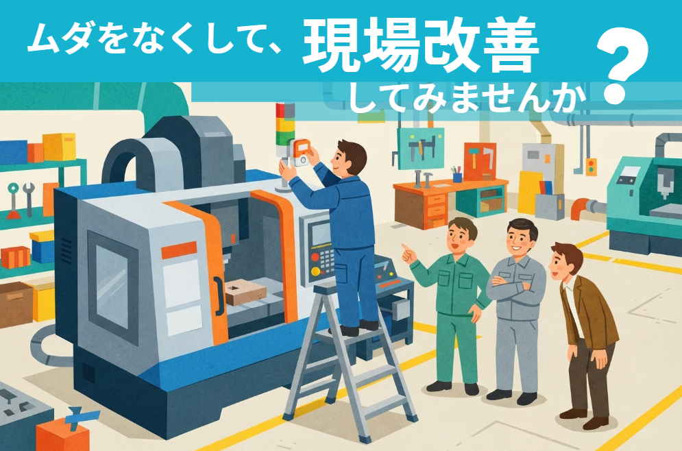
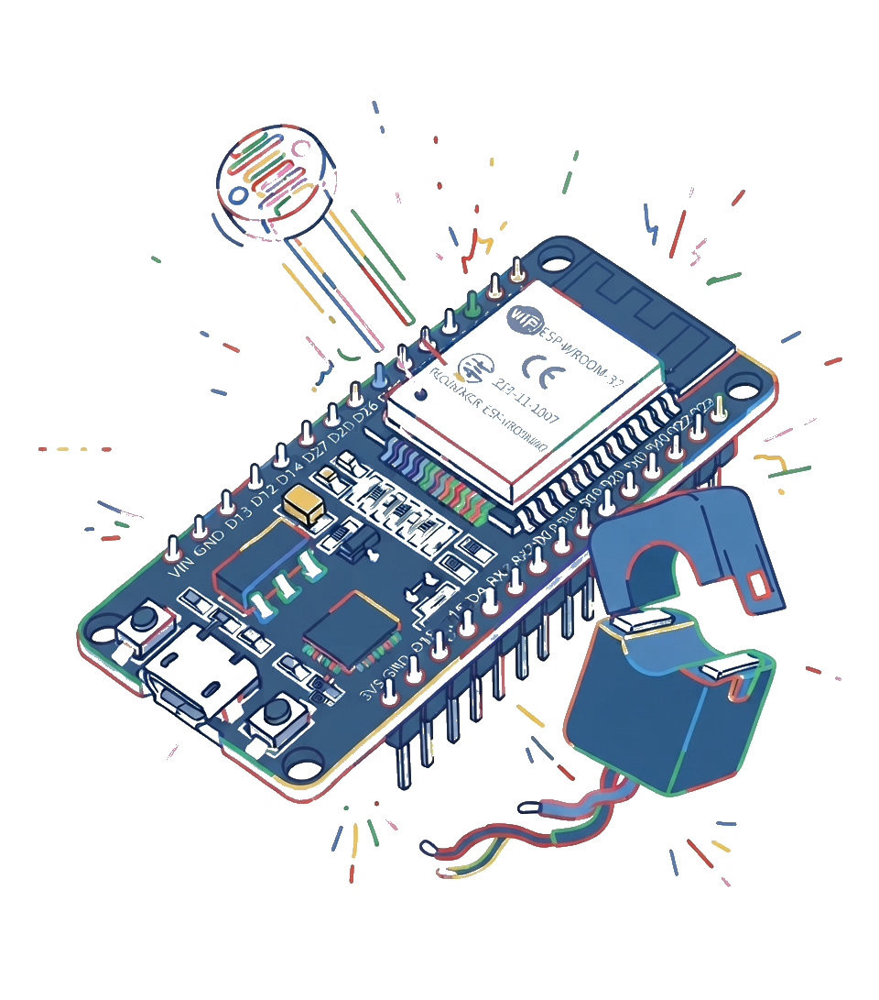

キャンペーン一覧
オメテックでは、サービスをお気軽にお試しいただけるキャンペーンを随時実施しています。
3万円で見える化お試しサービス

今ある設備に、IoTデバイスをそのまま後付け。
取り付けたその日から、現場の動きが見えてきます。
本サービスでは、貴社の現場に合わせて準備したIoTデバイスを、お試し価格で2〜3週間ほどお貸しいたします。機械本体や配線を加工・改造することはありませんので、メーカー保証や日々の運用に影響する心配はありません。
「ITを導入してみたいけれど、効果が分からないものにいきなり大きな投資をするのは不安だ」というお声にお応えするためのサービスです。まずは実際の効果をご覧いただき、本格的な導入が貴社にとって本当に価値のあるものかどうかをご判断ください。

お試しいただけるサービス
次の3つのサービスから、貴社の課題に近いものをひとつお選びください。どれを選べばよいか分からない場合は、事前のヒアリングで一緒に考えていきましょう。
稼働状況の見える化
加工機などに付いているパトランプ（積層信号灯）の点灯状態をセンサーで読み取ったり、機械に流れる電流を測定したりして、各設備が「稼働中」「停止中」「異常」のどの状態にあったかを時系列で記録します。記録はダッシュボードにリアルタイムで表示されるほか、後から振り返れるように蓄積されます。
「感覚ではもっと動いていると思っていた」「特定の時間帯に止まりがちだった」といった、日報だけでは見えにくい実態の把握に役立ちます。
- 貸出品
- センサーデバイス最大3台（設備3台分）
- こんな方に
- 稼働率を上げたい／段取り替えや停止の時間を把握したい
メーター・モニターの見える化
アナログメーターやカウンター、機械の表示画面などをカメラで撮影し、表示されている数値を読み取って記録します。データ出力の機能を持たない古い機械や計器でも、外から「見る」だけでデータ化できるのがメリットです。
定期的な見回りや手書きの記録の手間を減らし、数値の変化を手元で確認できるようになります。
- 貸出品
- カメラ付きデバイス1台（メーター・表示部1か所）
- こんな方に
- 見回りや記録を省力化したい／数値の推移を残したい
異常の見える化
設備や作業の状態を監視し、普段と違う状態を検知したときにお知らせします。何を「異常」とするかは現場によって大きく異なるため、ヒアリングと現地調査をもとに、状況に応じて最適なセンサーを選定します。
トラブルの発見が遅れて不良や停止が長引くことを防ぎ、「いつ・どんな状態で起きたか」の記録が原因究明の手がかりになります。
- 貸出品
- センサーデバイス最大3台
- こんな方に
- トラブルにすぐ気づきたい／不良や停止の原因を突き止めたい
お試しの料金・ご利用条件
30,000円（税別）
税込 33,000円
- 対象
- 上記サービスのうち1つ
- 体験期間
- 2〜3週間程度
- 料金に含むもの
- 事前のヒアリング・現地調査、デバイスの製作・据え付け・調整、出張費（青梅市および近隣地域）
- 出張エリア
- 青梅市および近隣地域
※遠方の事業所様は、別途出張費を頂戴する場合があります。 - お支払い
- サービス提供後、請求書払い
- お申込み期間
- 2026年11月16日（月）〜 12月18日（金）
※設置は2027年1月以降になる場合があります。
お試しのあとは？ 本導入のご案内
お試しで効果を実感いただけた場合は、そのまま本導入へお進みいただけます。本導入では、長期間の安定稼働を前提に設計した本番仕様のデバイスに入れ替え、貴社の設備でずっとお使いいただける形でご提供します。
お試しから本導入に進まれた場合は、お支払いいただいたお試し料金30,000円（税別）を本導入の価格から差し引きます。
- 本導入の価格は目安です。詳しくはお見積りにてご提示いたします。
- デバイスの台数の増減にも柔軟に対応いたします。
- LINEなどへの通知機能は、ご希望に応じて本導入時のお打ち合わせで内容を決定します。
見える化で、何が変わるのか
最初にお伝えしておきたいのは、「見える化そのものがゴールではない」ということです。デバイスを取り付けてグラフを眺めているだけでは、売上も利益も変わりません。大切なのは、データによって初めて分かった事実をもとに、現場のやり方を少しずつ変えていくことです。
たとえば、機械が止まっている時間を記録してみると、段取り替えや材料待ちといった、感覚では見過ごしていた停止が浮かび上がることがあります。機械を止めずに済む準備作業（外段取り）を増やしたり、頻繁に止まる原因を一つずつ取り除いたりすれば、設備も人も増やさないまま、生産できる量を増やすことができます。
こうして生まれた余力は、短納期の案件をお引き受けしたり、新しいご注文に対応したりするための力になります。人件費や設備費といった固定費が変わらないまま売上が伸びれば、その分だけ利益と利益率が高まります。
お申し込みから体験終了までの流れ
お申し込み
特設フォームからお申し込みください。設備の状況や改善したいことについて、いくつかの質問にご回答いただきます。内容を確認のうえ、こちらからご連絡いたします。
ヒアリング・現地調査
貴社へお伺いし、課題のヒアリングとサービスのご説明をいたします。あわせて現場で、デバイスの取り付け位置や無線の電波状況、電源などを確認します。
設置・見える化体験
あらためてお伺いし、デバイスを取り付けます。設置した時点からデータの記録が始まり、2〜3週間の体験期間がスタートします。
回収・本導入のご相談
体験期間が終わりましたら、デバイスを回収いたします。本導入をご希望の場合は、そのままご相談ください。
よくあるご質問
- Wi-Fiがない現場でも使えますか？
- ご利用いただけます。デバイスとの通信には当方で用意する専用の無線を使うため、貴社のWi-Fiや社内ネットワークは使用しません。ただし、スマホへの通知機能をご利用になる場合は、インターネット回線が必要です。
- 古い機械でも取り付けられますか？
- 機械の年式を問わず設置できます。
- デバイスを設置する際、機械を止める必要はありますか？
- 不要です。貴社の通常業務の邪魔にならないよう、こっそり設置いたします。
- スマホでも見られますか？通知はどこに届きますか？
- ご要望に応じて、お手元のスマホにメールやLINEで通知できます。
- データはどこに保存されますか？社外に出ることはありますか？
- ご指定のフォルダへ、ご希望の形式で保存できます。貴社内のパソコンに保存すれば、データが社外へ送られることはありません。
- 社内にIT担当者がいなくても大丈夫ですか？
- 問題ありません。設置から設定までオメテックが行い、蓄積したデータの活用方法も分かりやすくご説明いたします。
- お試しで使ったデバイスを、そのまま買い取ることはできますか？
- お試し用のデバイスは、現場に合わせて調整しやすい試作仕様です。本導入の際は、長期間の安定稼働を想定した本番仕様のデバイスに入れ替えてご提供します。
注意事項
- 本サービスで貸し出すデバイスは、期間終了後に必ずご返却ください。譲渡品ではございません。
- 本サービスで貸し出すデバイスは、稼働状況や数値の傾向を把握することを目的としたものであり、測定精度を保証するものではありません。
- 本サービスはご希望されるすべてのお客様を対象としたものではありません。お申し込み時のアンケートや設置環境などを総合的に判断し、ご提供の可否を決定させていただきます。あらかじめご了承ください。
- 本サービスのご利用は、1社様につき1回限りとさせていただきます。
- デバイスの設置・撤去の際は、必ずご担当者様の立ち会いをお願いいたします。
- デバイスの電源には、設置場所のコンセントをお借りします。
- お客様の故意または重大な過失によりデバイスが破損・紛失した場合は、実費をご負担いただきます。
- 業務に支障を及ぼすおそれがあると当方が判断した設備・現場には、デバイスを設置いたしません。
- 当方の責めに帰すべき事由によりお客様に損害が生じた場合、当方の賠償責任は直接かつ通常の損害に限り、本サービスの料金額を上限とします。ただし、当方の故意または重大な過失による場合はこの限りではありません。
- お申し込み時にご入力いただいた個人情報は、本サービスのご案内およびご提供のためにのみ使用いたします。
- 本サービスのお申込み期間は、2026年11月16日（月）から12月18日（金）までです。設置時期は2027年1月以降となる場合があります。